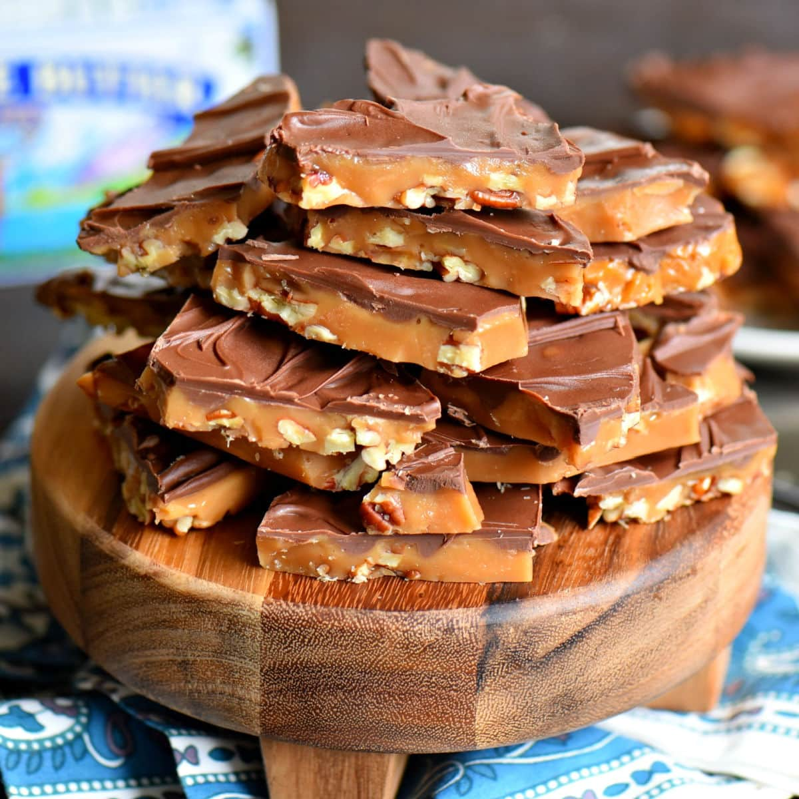

Easy Toffee

Very easy and yummy toffee made with saltine crackers. You'll love it! Serves a crowd.
Ingredients
- 1 (10 ounce) package saltine crackers
- 1 cup butter
- 1 cup light brown sugar
- 1 (12 ounce) package semisweet chocolate chips
- 1 cup slivered almonds
Preparation Steps
- Preheat oven to 325 degrees F (165 degrees C). Grease a baking sheet. Line baking sheet with saltine crackers, edges touching.
- In a medium saucepan, combine butter and brown sugar and cook until mixture reaches 235 degrees F (112 degrees C) or a small amount of mixture dropped into cold water forms a small ball that flattens when placed on a flat surface. Pour mixture over crackers and spread evenly.
- Bake in preheated oven 15 minutes. Sprinkle chocolate chips over hot toffee. When chips turn glossy, spread evenly with spatula. Sprinkle with almonds. Freeze 20 minutes before serving.